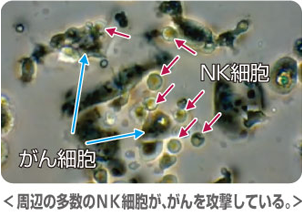
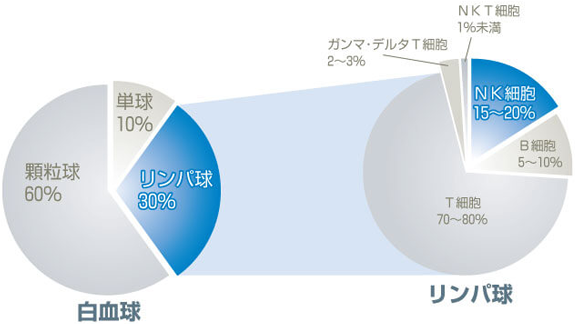
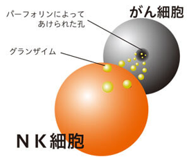
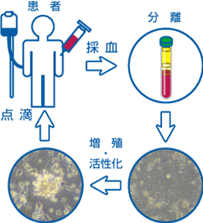

活性NK細胞療法
活性NK細胞療法
Amplified Natural Killer Therapy
21世紀のがん先端医療
厚生労働省届出済治療
（再生医療等提供計画番号 PC4150005 平成27年6月2日）
- 活性NK細胞療法
-
長年の経験と実績を誇る当院の免疫細胞療法の大黒柱活性NK細胞療法。
活性NK細胞療法は、血液中にあるNK（ナチュラルキラー）細胞を使用したがん治療で、採血して点滴を行うだけの簡単な治療です。
副作用が少なく、ほとんどのがん患者さんへ適用可能で、安心・安全な治療です。
がんは、体内で免疫細胞の攻撃から逃れてゆっくり時間をかけて細胞分裂（増殖）し、本来そこにはあるべきでは無い細胞の集団を言います。
CTやPETなどで発見されるがんの大きさは5mmから10mmの大きさです。
この5mmや10mmの集団の中には何千から何億ものがん細胞が集まっています。
このがんを攻撃する免疫細胞の主役がNK細胞です。
当院の免疫細胞培養センターで、患者さんから頂いた血液からNK細胞を取り出し、大量に増やし、
細胞を元氣にさせる事で、何千から何億ものがん細胞と闘わせます。
当院では、この活性NK細胞療法を代行して頂く協力医療機関が全国にございます。遠方の方でも当院の治療が行えるようにしております。
NK細胞などのリンパ球を用いた免疫細胞療法はすでに大学病院などで十数年にわたって研究や治験として行われてきており、臨床医学応用も行われております。
こうした大学病院はすでに十数か所あり、今大変注目されている免疫細胞療法です。
NK細胞とは

NK細胞はナチュラルキラー(Natural Killer)細胞の略称で、1970年代に発見された細胞です。
血液中に存在する細胞で免疫細胞のひとつです。白血球の一種でリンパ球中の約15～20％しか存在していません。
「Natural」はこの場合「生まれつきの」という意味で「Kiiler」は「殺し屋」。
つまり生まれ持ってがん細胞やウイルス感染細胞を攻撃する事の出来る細胞で、全身をパトロールし、免疫力を維持するのに必要な細胞です。

NK細胞の攻撃
NK細胞には「自己(自分自身)」と「非自己」を見分ける能力が備わっています。
がん細胞の多くは、「自己」を認識する為のMHC(主要組織適合遺伝子複合体)classⅠ分子という目印を発現していない「非自己」の細胞です。
NK細胞は、MHCclassⅠ分子を持つ正常な細胞なのかを判別し、MHCclassⅠ分子を持たない異常な細胞を「非自己」の細胞として攻撃します。
NK細胞は「非自己」として認識した細胞、つまりがん細胞を攻撃対象として認識し、がん細胞の細胞膜に孔をあけるパーフォリンを放出します。
あけた孔の中にアポトーシス（細胞の自然死）を引き起こすグランザイムを注入する事でがん細胞を破壊します。

これ以外にも、NK細胞には攻撃の対象となる細胞から分泌されるサイトカインと呼ばれるシグナルの存在があります。
細胞は、ウイルスなどに感染した際に、ウイルスに感染した細胞の存在を示す事とNK細胞を活性化させる為の
サイトカイン(インターフェロン(INF-α/INF-β))を分泌します。
NK細胞はこれにより、ウイルスに感染した細胞を速やかに破壊することが出来るのです。
さらに、Fc受容体と呼ばれるたんぱく質をNK細胞は備えており、抗体医薬品などによってマーキングされたがん細胞を攻撃する事も可能です。
活性NK細胞療法の特徴
NK細胞は、がん免疫細胞療法の本命であり、高い攻撃力を備えています。鉄壁を固めているがんに対しても有効に攻撃し、がん細胞を攻撃します。
- 免疫細胞療法の中でもNK細胞は攻撃力が強く、がん細胞を狙い撃つ
- がんは免疫の病気の為、活性NK細胞療法は最適な治療法
- 患者さん自身の血液より増殖・活性化する治療の為、安心
- 難治性がんと診断された方の治療にも可能
- ほとんどのがんに適用が可能（血液がんの一部を除く）
- 副作用は少なく、高齢の患者さんにも最適（まれに軽度の熱が出ることもあります）
- 他のがん治療と併用可能（三大治療との併用も可能で、抗がん剤による副作用の改善につながる）
- 通院による治療（入院の必要はない）
活性NK細胞療法の概要
活性NK細胞療法の治療法

患者さんから少量の血液を採取し、生化学的な培養技術で増殖・活性化し、約2週間無菌状態で、約20億から60億個にまでNK細胞を増殖させ、生理食塩液とともに、再び静脈から患者さんの体内に戻します。
1回の投与する活性化したNK細胞（細胞傷害性T細胞を含む）の量は患者さんの状況により異なりますが、一般的に計算すると健康な人が持っているNK細胞量の約20倍から60倍で、約20人から60人分に相当します。（人の体内を循環する血液量が約4から5リットルで、NK細胞量は1億個と言われています）
活性NK細胞療法の考え方
当院の治療は、患者さんにも積極的に治療に参加して頂きたいと考えています。
がん細胞を攻撃する免疫システムには、脳の視床下部の働きと密接な関わりがあり、自分自身の「病気と闘う、生きる」という強い意志・意欲が免疫力をいっそう高めると言うのです。
これは、最新の研究からも報告されている事で、快感や心の安定は免疫力を高め、反対にストレスは免疫力を低下させると言うことが医学的にも証明されています。
「心と免疫は一体」です。
されるがままの治療ではなく、患者さん自身ががん治療に向き合うことで、我々にも想像できないような治療効果を生んで頂きたいと思います。
活性NK細胞療法の副作用
個人差はありますが、稀に発熱することがあります。
1回目の投与で出なくても何度目かの投与で出る場合もあります。